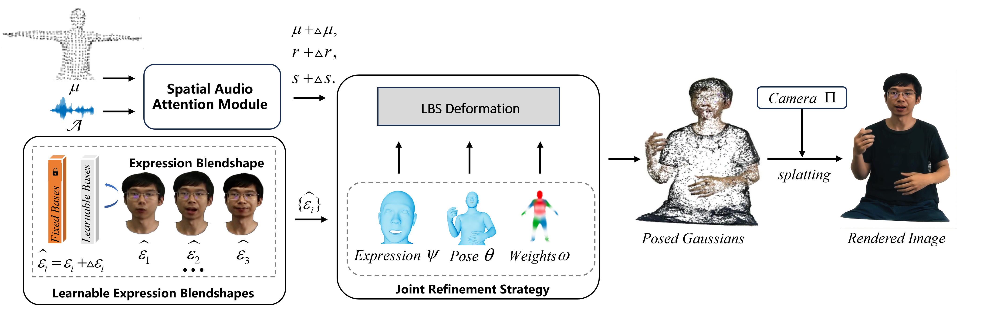

THGS: 3D Talking Human Avatar Synthesis via Gaussian Splatting
 Learning from a one-minute monocular video, THGS can learn a 3DGS-based talking human avatar,
Learning from a one-minute monocular video, THGS can learn a 3DGS-based talking human avatar,and we can explicitly control over expression, body joints and camera pose.
Abstract
Despite the remarkable progress in NeRF/3DGS-based talking head solutions, directly generating 3D talking human avatars remains challenging. We propose THGS, a novel method that extends talking head techniques to reconstruct expressive human avatars using 3D Gaussian Splatting (3DGS) from dynamic monocular videos. After training on videos, THGS can animate speaker-specific human avatars with facial dynamics and hand gestures given speech audio and SMPL-X pose sequences.
THGS effectively overcomes the limitations of 3DGS-based human reconstruction methods in capturing expressive features like mouth movements, facial expressions, and hand gestures from dynamic monocular videos.
The key contributions of this paper are threefold. Firstly, we introduce a simple yet effective learnable expression blendshapes for head dynamics reconstruction, where avatar expression can be generated by linearly combining the static head model and expression blendshapes. Secondly, we employ a pose and expression coefficient refinement technique to optimize hand pose and facial expression accuracy on the fly by aligning 3D Gaussians with a human template mesh, which is crucial for human reconstruction pipeline. Thirdly, we use a Spatial Audio Attention Module (SAAM) for lip-synced mouth movement animation, which builds connections between speech audio and mouth Gaussian movements. Experimental results demonstrate that THGS achieves high-fidelity expressive 3D talking Gaussian human avatar animation at over 150 fps on a web-based rendering system.

Our Pipeline. Taking a monocular video as input, we learn a 3D Gaussian representation of talking human avatars. We initialize the 3D Gaussians on the SMPL-X vertices in the canonical space and drive the 3D Gaussians through LBS deformation to obtain posed Gaussians. For the LBS deformation module, we use pose θ and expression ψ as inputs. During training, θ, ψ, and skinning weights ω are optimized to achieve better body poses alignment. We also introduce a Learnable Expression Blendshapes to optimize facial dynamics reconstruction. Audio features are processed through the Spatial Audio Attention Module (SAAM), predicting mouth Gaussians deformation. We combine mouth Gaussians deformation with the posed Gaussians to produce the final Gaussians, P = {u+∆u,r+∆r,s+∆s,η,f}. Finally, a 3DGS rasterizer renders images based on camera poses.